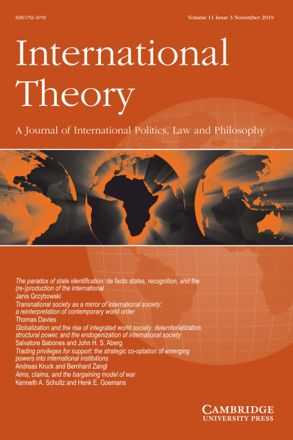

收录于合集 #理论研究 96个

作品简介
【作者】 Emma Hutchison是澳大利亚昆士兰大学政治科学和国际研究学院的副教授和澳大利亚研究理事会DECRA研究员。研究兴趣为世界政治中的情感和创伤，特别是在社群、安全、人道主义和国际援助的政治与伦理方面。Roland Bleiker是澳大利亚昆士兰大学国际关系学教授，教授国际关系、和平研究和政治理论。研究兴趣为美学、视觉和情绪的政治，研究领域广泛，从人道主义和和平建设，到抗议运动及朝鲜冲突都有所钻研。
【编译】 扎西旺姆（国政学人编译员，伦敦大学亚非学院）
【校对】 陈 勇
【审核】 王泽尘
【排版】 杨 洋
**【来源】
**
****Emma Hutchison and Roland Bleiker (2014). Theorizing emotions in world politics. International Theory, 6 , pp 491-514 doi:10.1017/S1752971914000232
期刊介绍
期刊简介

《国际理论》（International Theory），是一本经同行评审的期刊，致力于促进有关世界政治积极、法律和规范方面的理论学术研究。2018年该期刊影响力因子为1.263，在“国际关系”类别的91种期刊中排名第51。
世界政治中的情绪理论化
Theorizing emotions in world politics
内容提要
情绪在世界政治的研究中总被理所当然地视作理性决策者处理或反应的现象，直至最近十年才被重视。如今研究人员普遍认同，情感在世界政治中扮演着重要的角色，影响着个人和集体的社会化和相互作用,但仍有众多关键问题尚无解答。这篇简短的调查论文试图提出一条介于宏观方式与微观方式之间的研究路径。宏观方式确定了关于政治情绪的性质和功能的可归纳命题；微观方法探讨了特定的集体情绪在特定情况下如何具有政治意义。作者认为两者的结合有助于理解个人情绪如何能够成为集体和政治情绪。研究关键是要克服理性和情绪之间错误的二分法，承认理性总是包含情绪，就像思考总是包含感觉一样。
文章导读
情绪研究面临转型，不再是之前情绪与理性的二分，而是将其作为社会研究及国际政治研究的一个固有部分，为传统和非传统的政治现象提供新见解。作者认为，从神经科学中对脑部刺激的研究到集体恐惧的历史转型研究，情绪在不同层次，且表面上并无关联的许多研究和分析中都很重要。 研究目前面临一大关键挑战，即理论化个人情绪成为集体和政治情绪的过程。作者认为，个人和集体情绪之间的联系可以通过结合两个看似矛盾的学术取向——宏观和微观中的方法来得到最好的确认和检验。 宏观方法发展了关于政治情绪的出现、性质、功能或影响的可归纳理论命题，其方式为找出人们和政治现象是如何与跨越时间和空间的情感联系的共性。但该方法也受到挑战，在理解诸如恐惧或共情等特定情绪在不同文化背景下如何获得不同含义时，宏观方法具有同质化情绪的风险，也在所研究的特定经验模式之外，阐明理论见解及其重要意义时受到挑战。微观方式可以通过关注具体情绪的功能来应对宏观方式的这一局限之处。 所以，作者认为，结合宏观与微观方式发展新的研究路径有助于应对当前情绪研究的关键挑战：理解个人情绪如何转化为集体和政治情绪的过程。
一、 应对情绪理论化确实的早期尝试
情绪在国际关系中长期扮演重要但不明显的角色。如恐惧和愤怒在政治现实主义中的运用遍及修昔底德，霍布斯，摩根索，华尔兹的研究之中。又如新自由主义视野中信任在趋于合作的国际秩序的中心作用。但这些感情鲜少被直接讨论或理论化。一般来说，情绪被简单地视为理性决策者对事件或现象的反应。由此，情绪在发挥重要的作用的同时，仍很大程度上在学术分析中被忽略。情绪在理论化方面的缺失部分是出于将情绪对立于理性和合理性（reason
and
rationality）的描绘。情绪长久以来都被视作不合理的反应或与公共生活无关的纯个人体验。而政治决策曾意味着免于激情的驱使，只因冲动的欲望（impulsive
urges）将不可避免地导致不合理的暴行和伤害。受此影响，即使其他学科，如社会学，心理学，人类学，女性主义等早已开始情绪研究，但直至最近，国际关系学界总体上都是以围绕理性行为体来进行模型构建的。
政治心理学和外交政策学是最早一批正式研究情绪的国际关系路径，在1970年代就探索了情绪和理性在决策过程中的关系。其研究反对决策是基于“经典合理性’”(classical
rationality)的假定，并声称领导常常没有选择，而可能只依赖与大脑的情绪部分相关的看法和洞见。该研究为情绪概念的理解提供了新方式，但也受限于早期的政治心理学研究，仍在理性行为者的范式中运作。此时，情绪被视作对合理性的干扰或偏离，被看作制造“错误知觉”（misperception）的事物。
** 二** 、 情绪研究的发展:介于认知/情感和潜在/涌现方法之间
乔纳森·默瑟（Jonathan Mercer）和内塔·克劳福德（Neta Crawford）首先提出了重思情绪和合理性两分法的需要。其后众多文献层出不穷。以分类方法来看，主流分类主要以心理学类别为中心，比如区分认知与情感方式，及潜在与涌现方式间的差别。认知取向的学者认为情感是一种知识和评价思维的形式。另一项传统则反对认知取向的立场，将情绪视为非反思性（non- reflective）的身体感觉和更适合被称作“情感”（affect）的心情（moods more appropriately captured with the term affect）。神经科学的发现识别出一种更具综合性的“混合型路径”，指出情绪是意识性和非意识性相结合的产物，既包含认知，也有身体感知的因素。神经科学还提供了精确的证据，以说明决策和判断基本上都是包含情绪的。潜在模型假定情绪总是存在的。涌现模型则主张情绪本身是随着时间的推移，通过社会和文化的感知和体验的形式而形成的。
三、 宏观及微观间的新概念化
作者提出，情绪研究的新方法提供了综合现有情感研究的理想方式，并指出了一条连贯的理论路径。提出这一构想旨在使原有的讨论让位于国际关系情绪研究面临的关键挑战：理解个人情绪成为或同时成为公共，社会，集体和政治情绪的具体过程。两种方法的区别为：宏观方法设计了情绪如何在世界政治中起作用的普遍理论，而微观研究集中于特定的情绪如何在特定的政治环境中获得共鸣。而相同之处在于，都试图捕捉情绪的实质及在世界政治中的作用。两者都认为情绪不局限于个人或私人现象，而需要更广泛的政治理论化。虽源于不同学科及相异的研究路径，两者都在检验情感如何通过调解政治认同，社区，以及随后的行为等方式在构成社会领域的过程中发挥作用。宏观方法强调需要进行抽象化来提炼出情感政治可归纳的属性，但其也面临概念上的挑战。宏观方法在理论上承认文化和情感之间的联系，但从定义上来说，它们实际上很难解释这些联系的内容。换句话说，宏观模型有使情绪同质化的风险，有将现实中更为复杂和多样的情绪现象混为一谈的风险。微观方法直面宏观模型所面临的挑战，尤其是情绪同质化的风险，同时讨论特定情感的本质、功能和重要性。微观方法较少建立可归纳的原则，而更多关注和分析情感存在并具有社会和政治意义的独特方式和机制。虽然微观方法提供了异常丰富的见解，但它们也面临概念上的挑战，即无法将其外推至更广的洞见以建立理论命题。作者提出，需要更多地去探索如何在更宏观的政治框架下理解微观政治过程，最终的目标是避免出现一个整体化的宏大理论或回避更大理论命题的文化相对主义形式。
四、 关键的挑战:个人情绪如何变成集体情绪和政治情绪？ ****
理解并理论化情绪在形成和激励政治团体中的作用，是回答“为何国际关系学者应关注情绪”这一问题的核心。 作者认为，关键在于将情感政治化的实际过程进行理论化。到目前为止，对个人和集体情感之间联系的探索已经成型，主要是在国家层面上。学者们将国家理论化为带情感的行为者，并倾向于将情感同把个体联系在一起的因素类型联系起来。这些研究认为，人们越是与共同的信仰或身份联系在一起，他们就越有可能分享情感，甚至在国家的宏观层面也是如此。然而，一些学者认为，从本体论的角度看，国家是没有感情的。但这并不是否认情绪和情感倾向在集体层面上起着重要的作用。社群确实是情绪获得意义和被解释的关键，但在大至国家层面来理论化情绪，很多困难的问题在很大程度上仍然没有答案。 作者认为，当前的主要任务是将关于集体情感重要性的常识立场，转变成对情感在世界政治层面上究竟是如何起作用的更透彻的理解。 本文确定了对这一过程至关重要的四个问题:定义、主体、表征和权力，为以后的情绪研究提供了一个提点。
五、 情绪、感觉和情感的概念化
大多数国关学者将情绪用作涵盖性术语，来指代一系列不同的现象。而作者也认识到许多现象学区别的重要性，如“情绪”（emotion）、“感觉”(feeling)和“情感”(affect)之间的区别。关于定义的争论涉及到如何将个人和集体情感之间的联系理论化的核心问题。例如，神经科学家安东尼奥·达马西奥(Antonio Damasio,2000)认为“感觉”是情绪变化的生理或身体表现。根据达马西奥的定义，默瑟将“感觉”称为“意识到自己正在经历一种情绪”。克劳福德也将“情绪”视为“个人向他人描述感觉的内心状态”。二人都突出了社会维度的必要性，强调情感，无论是私人的还是主体性的，总是与已经存在的社会、文化和政治背景交织在一起。默瑟的特定概念——“社会情感”也试图探讨当情感与人们所关心的社会事物(无论是权力、地位还是正义)相关时，它们是如何成为主体间性的。反思“情感”和“感觉”之间的区别，可能会帮助人们理解基于身体的现象和情绪传达给他人的过程之间的联系。重点是，感情的具体形式——我们为什么会有这种感觉——至少部分是通过社会和文化过程形成的，而情绪最初就是通过这些社会和文化过程形成的。 “情绪”和“情感”之间的区别则更进一步。情绪被看作是具有社会意义和政治影响的个人的和有意识的感觉。相比之下，情感动态被认为是超越表象的。 它们被视为是存在于意识之前和之外的更广泛的现象；它们是一种广泛的非反思性和潜意识的身体感觉，如情绪、直觉、气质、依恋、性情，甚至记忆。然而，两术语间的的区别并不像一些学者认为的那样泾渭分明，相互排斥。情感和情绪可以被看作是内在联系的，因为情感状态是潜意识的因素，可以构建和影响我们对社会世界更有意识的情绪评价。因此， 使用“情感”一词，就要从孤立具体的微观情感，转向更普遍的宏观层面的认识，即情绪(emotions)、感觉(feelings)和知觉（sensations）的结合常常会产生无意识的、不加思考的情感意向（affective disposition），这些情感意向连接并超越个体。 定义上的纷争虽无法消停，但为理解实质性问题提供了一个方式，尤其是感觉，情绪和情感都存在于个人和集体层面的过程。 情感现象在历史上和特定背景下都受到个人和集体的制约，反过来，情感现象又隐含着特定的感觉和情绪，这些感觉和情绪又形成和改变了特定的社会政治行为规范。
六、 情绪和身体
如果不对“身体”的角色进行理论化，就无法理解情绪。情绪与身体有着内在的联系，没有身体，就没有情绪问题。一方面，在身体论（somatic account）中，身体是情绪的中心，因此若是想将情绪的集体和政治性质理论化，就必须非常谨慎。另一方面，一些学者坚持认为情感不应该也不可能被简化为身体层面。两方观点代表了以身体为基础的微观方法与更宏观的国际关系理论化尝试之间的紧张关系。作者认为。对微观和宏观联系的认识，可以揭示以身体为基础的内在情感是如何具有社会政治意义的。尽管个人体验是情绪从身体中浮现出来的，但它也是在特定的社会和文化环境中形成和构建的。人对特定政治事件的反应/感受（feel）取决于社会的暗示。深入研究情感的社会特性揭示了身体不仅仅是独立于环境运作的自主的物理实体。菲尔克（Fierke）指出身体应被视作一种更复杂的机制，将人体与情绪特征和文化及历史融合在一起。简言之，身体和社会（对情绪）的影响并无高低之分。情绪的政治理论化必须在将其置于人体内的同时，认识到它是社会和文化体验以及个人在被此类体验社会化后进行情绪管理的产物。
七、 表征是个人与集体间的关键联结
表征（representation）是理解个体和集体情感之间联系过程的核心。作者认为有两点原因。一，表征在某种程度上是理解情绪的唯一凭据。尽管情绪有社会根源，可以产生集体共鸣，但情绪的本质是内在的。二，也是更重要的一点，表征是个体情绪成为集体和政治情绪的过程。表征可以通过图像和叙述，通过口口相传，通过新旧媒体传播，通过社会讲述自己和他人的无数故事而出现，这些都是情绪显现和定义的过程。 表征塑造了身份认同、依附（attachment）、态度、行为及社群，并在此过程中建立了将人们联系在一起的情绪结构。 表征既不是真实的，也不是被动的。（其形成过程中） 总是有一定程度的解释或转述。（所以）在表征及其所代表的事物之间总是存在着差距。该差距在许多方面成为了政治的源头，因为其包含并经常掩饰从一个特定角度描述世界的/权力。 作者认为可以通过分析行为举止来理解情绪反应，这样的研究也可为理解情绪如何超越表征上升到公共和政治维度提供机会。
八、 情绪、权力和国际关系理论
情绪在世界政治的研究之中总被理所当然地视作理性决策者处理或反应的现象，直至最近十年才被重视。研究人员普遍认同，情感在世界政治中扮演着重要的角色，塑造着个人和集体的社会化和互动方式,但仍有众多关键问题尚无解答。 这篇简短的调查论文试图提出一条介于宏观方式与微观方式之间的研究路径。宏观方式确定了关于政治情绪的性质和功能的可归纳的命题；微观方法探讨了特定的集体情绪在特定情况下如何具有政治意义。作者认为两者结合有助于理解个人情绪如何能够成为集体和政治情绪。 一旦理解了集体情绪，情绪与权力之间的联系便不可避免地成为了中心话题。强调情绪和权力之间的联系突显了情绪的集体和政治属性。情绪规定了在政治中可能的界限。情绪可以揭示或隐藏，驱动或禁止某些行为。对权力的关注为情绪研究者提供了一种与更成熟的国际关系理论进行对话的理想方式。 这不仅是因为国际关系研究是以权力为中心展开的，也是因为权力可用来分析情绪的运作：情绪如何常以看不见摸不着的方式授予(保留)权威，并由此开放(同时也限制)政治环境。总之，研究关键是要克服理性和情绪之间错误的二分法，承认理性总是包含情绪，就像思考总是包含感觉一样。
** _ _ _ 本文由国政学人独家编译推荐，文章观点不代表本平台观点，转载请联系授权。___**